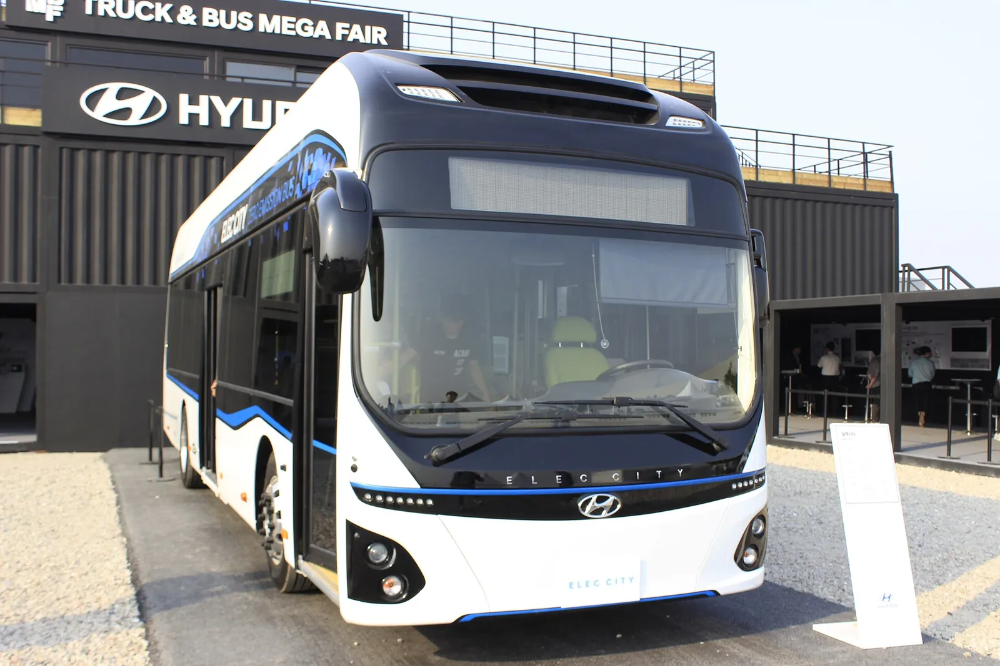
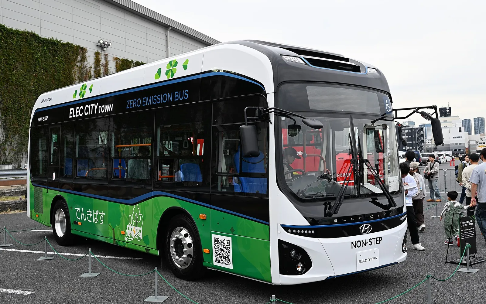
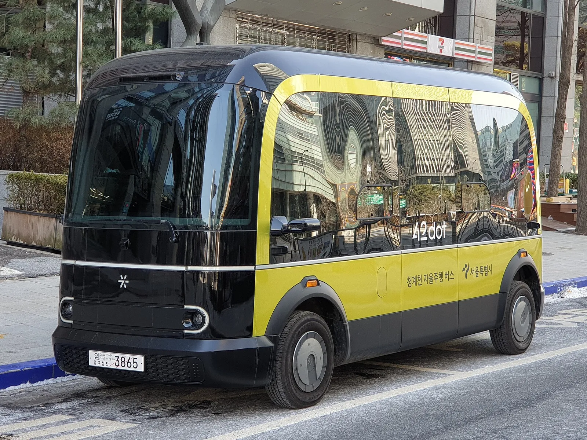
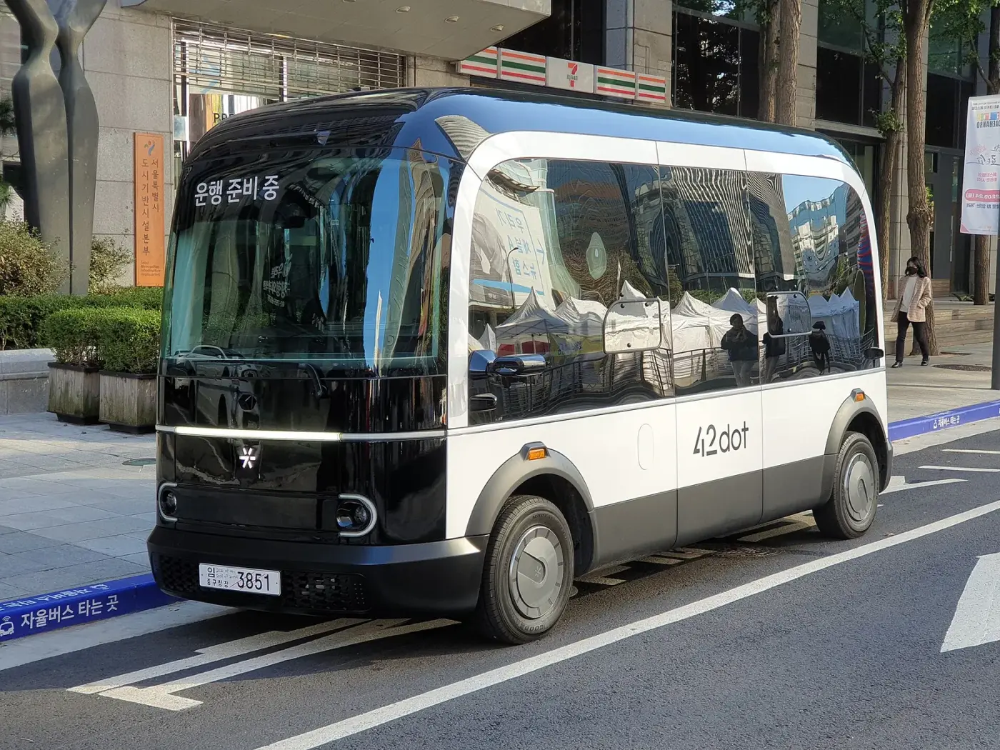
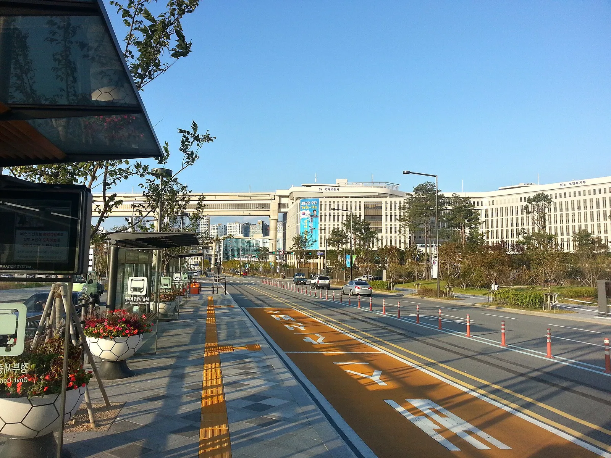
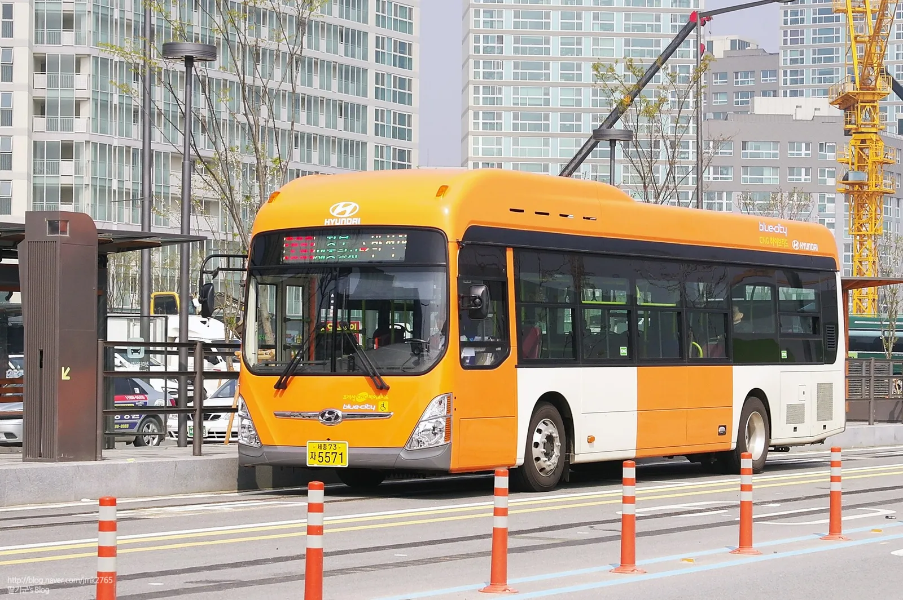
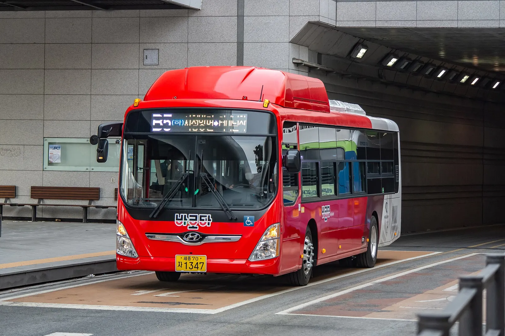
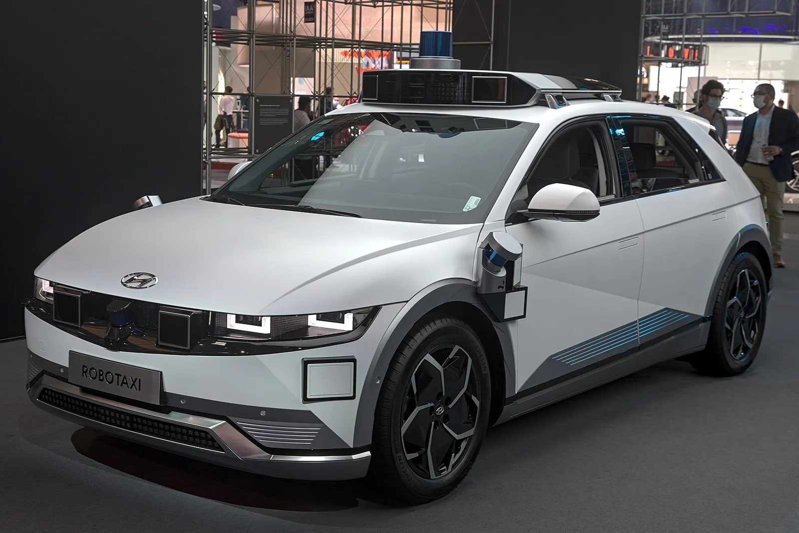
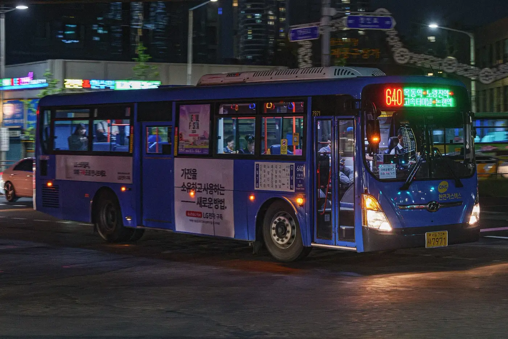
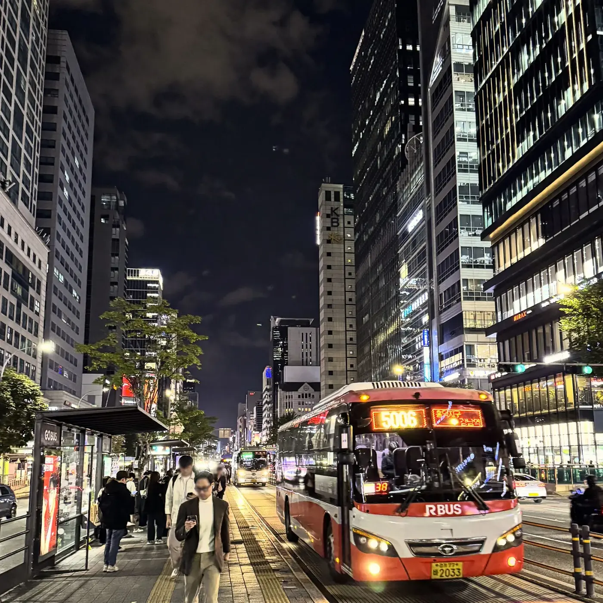

▲ 서울 새벽동행 A160 버스(도봉산역~영등포역) ⓒ Trainholic (Wikimedia Commons, CC BY-SA 4.0)
현대차·기아 AVP본부장 박민우 사장은 10월 1일 서울시와 맺은 협약을 두고 "자율주행 기술을 시민들이 안심하고 이용할 수 있는 대중교통 서비스로 발전시킨다는 점에서 의미가 크다"고 밝혔다(현대차그룹 보도자료 기반 기사). 현대차·기아는 서울특별시, 서울특별시버스운송사업조합과 '레벨4 자율주행 시내버스 상용화 및 산업 생태계 구축' 업무협약(MOU)을 체결했다. 그런데 보도자료와 매체 기사를 모두 훑어봐도 몇 대를, 어느 노선에, 언제부터 굴리는지는 나오지 않는다. 이 글은 협약에서 확인되는 것과 비어 있는 것을 나누고, 서울이 이미 운행 중인 자율주행 버스 현황과 다른 도시 사례를 같은 표에 놓고 비교한다.
강남 로보택시 쪽 이야기는 강남 심야 로보택시 19대 확대 기사와 호출 방법 기사에서 다뤘다. 이 글은 택시가 아니라 시내버스와 산업 생태계에 초점을 둔다.
1. 10월 1일 협약 — 누가 무엇을 맡나
현대차그룹 보도자료와 카가이·파이낸셜뉴스·인더스트리뉴스 보도를 대조하면 협약의 뼈대는 일치한다. 목표는 서울에서 자율주행 시내버스를 실증·운영해 레벨4 버스의 상용화 시점을 앞당기고 관련 산업 기반을 만드는 것이다. 협약식에는 오세훈 서울시장, 박민우 현대차·기아 AVP본부장(사장), 김정환 서울특별시버스운송사업조합 이사장이 참석했다고 카가이는 전했다.
| 주체 | 맡은 일 | 비고 |
|---|---|---|
| 서울시 | 정책 수립·제도 개선 지원, AI 기반 학습 데이터 공유 | 자율주행 시내버스 도입 관련 행정 지원 |
| 서울특별시버스운송사업조합 | 운수사의 자율주행 시내버스 전환, 인력·인프라 지원 협력 | 실제 운행은 기존 시내버스 운수사 체계와 맞물림 |
| 현대차 | 자율주행 특화 버스 개발·공급 | 표준화 센서·이중화 부품 적용 플랫폼형 차체 |
| 기아 | 현대차와 공동 당사자로 참여 | 역할 세부 구분은 보도에서 확인하지 못함 |
| 관제 플랫폼 | 현대차·기아가 신규 구축해 실증사업에 투입 | 실시간 운행 관제, 비상상황 모니터링, 차내 위험상황 대응 |
📍 이번 협약에서 '숫자'가 없는 이유를 추정해 보면
보도자료에는 대수·노선·일정이 없다. 서울시는 8월 계획 발표 때 "연도별 도입 대수와 구체적 노선은 확정되지 않았다"고 밝힌 것으로 보도됐고, 전체 사업계획·예산은 9월 초 발표하겠다고 예고했다(아이뉴스24). 9월 10일 공개된 G3 서울플랜 보도에서도 자율주행 버스는 500대 목표 외의 세부 내용을 찾지 못했다. 따라서 이번 MOU는 '누가 어떤 역할을 한다'는 틀을 먼저 정한 단계로 읽힌다. 이는 카프리즘의 추정이며, 비공개 협의 내용은 확인하지 못했다.

▲ 현대차 전기 저상버스 일렉시티 전시 차량. 이번 협약에서 공급될 자율주행 특화 버스의 구체 차종은 보도에 나오지 않았다 ⓒ Trainholic (Wikimedia Commons, CC BY-SA 3.0)
2. '플랫폼형 차체'가 생태계를 만든다는 뜻
협약의 핵심 단어는 '특화 버스'다. 현대차그룹은 센서 구성을 표준화하고 신뢰성 높은 부품을 이중화한 플랫폼 형태의 차체를 공급하겠다고 밝혔다. 자율주행 기술 개발사는 안정적인 환경에서 기술을 검증하고, 버스 운수사는 운행 연속성을 유지할 수 있다는 설명이다. 카가이는 이 구조가 개발사의 검증 환경과 데이터 표준화에 도움이 된다고 정리했다.
A504 노선에는 현대 일렉시티 31석 버스가 투입됐다고 보도됐다. 차량 제조사가 처음부터 센서 위치와 이중화를 정해 공급하면 개발사마다 차를 따로 개조하는 부담이 줄고, 수집되는 데이터 형식도 맞춰질 수 있다. 이는 카프리즘의 해석이며, 실제 효과는 차량이 공개돼야 판단할 수 있다.
| 구분 | 기존 차체 개조 방식(일반적 구조) | 협약이 제시한 플랫폼형 차체 |
|---|---|---|
| 센서 위치 | 개발사·차량마다 다를 수 있음 | 표준화 구성(보도자료) |
| 안전 부품 | 기존 양산 버스 부품에 의존 | 이중화 부품 적용(보도자료) |
| 개발사 입장 | 차량 개조·인증 부담을 각자 짐 | 같은 차체에서 기술 검증 가능 |
| 데이터 | 형식이 제각각일 가능성 | 표준화 가능(카가이 정리) |
| 운수사 입장 | 차량마다 점검 체계가 다를 수 있음 | 관제 플랫폼 하나로 통합 관리 구상 |
| 구체 차종·가격 | — | 공개되지 않음(확인하지 못함) |

▲ 현대 일렉시티 타운(2025 재팬 모빌리티쇼 전시 차량). 서울 새벽동행 A504에 투입된 차종은 일렉시티로 보도됐으나, 이 전시 차량은 자율주행 사양이 아니다 ⓒ TTTNIS (Wikimedia Commons, CC0)
3. 서울은 이미 달리고 있다 — 새벽동행 4개 노선
협약 기사에서 놓치기 쉬운 부분은 서울이 이미 자율주행 버스를 운행 중이라는 점이다. 현대차그룹 보도에 따르면 현대차·기아는 9월 서울시 '자율주행자동차 운송플랫폼 민간사업자'로 선정돼 강남·상암에서 자율주행 택시와 새벽동행버스를 운영할 예정이다. 서울시가 밝힌 새벽동행 자율주행 버스 노선은 A160, A741, A148, A504 네 개다.
| 노선 | 구간 | 확인된 내용 |
|---|---|---|
| A160 | 도봉산역~영등포역 | 새벽 3시 30분경 도봉산 환승센터 출발, 올해 1월 유료화, 조조할인 적용 1200원 |
| A741 | 구파발역~양재역 | 23.5km 왕복, 새벽 3시 30분 출발 1회 운행, 일반 버스 첫차보다 일찍 출발(헤럴드경제), 초기 무료 후 1200원 전환 방침 보도 |
| A148 | 상계역~고속터미널 | 미아사거리·경동시장·압구정역 경유 22.1km 왕복, 하루 1회, 일반 버스 첫차보다 30분 이른 운행·41개 정류소 급행(헤럴드경제), 초기 무료 후 1200원 전환 방침 보도 |
| A504 | 금천구청~시청역(신림·노량진·서울역 경유) | 4월 29일 개통, 평일 새벽 3시 30분 금천구청 출발, 17.6km 구간 1회 왕복 운행(헤럴드경제 표기), 32개 정류장 급행, 일렉시티 31석, 안정화 기간 무료 |
📍 A160 거리가 매체마다 다르다
A160 구간을 한 매체는 25.7km로, 다른 매체는 왕복 50km로 적었다. 편도와 왕복 표기 차이일 가능성이 있으나 서울시 원문에서 직접 확인하지는 못했다. A741·A148의 개통일과 현재 요금도 최신 공식 공고로 확인하지 못했다.

▲ 42dot 자율주행 셔틀의 다른 차량. 운행 구간과 시점은 확정하지 않는다 ⓒ Damian B Oh (Wikimedia Commons, CC BY-SA 4.0)
운행 시간대가 새벽 3시대에 몰린 이유는 보도에서 짐작할 수 있다. 환경미화원·경비원처럼 첫차보다 먼저 출근하는 이용자를 겨냥한 노선이다. A148은 일반 148번 버스 첫차보다 30분 이른 시간에 운행한다고 헤럴드경제가 전했다. 자율주행 버스를 가장 먼저 투입하기 쉬운 곳은 교통량이 적은 시간과 중앙버스전용차로라는 서울시 판단과 맞물린다.
4. 숫자로 보는 서울 자율주행 버스 — 24대에서 500대까지
서울시가 8월 발표한 계획을 보도한 위키트리·아이뉴스24 기사에 따르면 현재 6개 자치구에서 자율주행 차량 24대가 운행 중이다. 내역은 버스 16대, 택시 7대, 수요응답형(DRT) 1대이며 누적 탑승객은 7월 말 기준 23만4000명을 넘었다. 목표는 2030년 500대다. 아래는 이 수치로 카프리즘이 계산한 표다.
| 항목 | 계산 | 결과 |
|---|---|---|
| 현재 대수 | 16 + 7 + 1 | 24대 |
| 버스 비중 | 16 ÷ 24 | 약 66.7% |
| 2030년 목표 증가분 | 500 − 24 | 476대 |
| 목표 배율 | 500 ÷ 24 | 약 20.8배 |
| 2026→2030 균등 증가 가정(4개 증가 구간) | 476 ÷ 4개 구간 | 연 약 119대 |
| 2029~2030 집중 도입 가정(본격 도입 시작 시점 반영) | 476 ÷ 2년 | 연 약 238대 |
| 대수당 누적 탑승객 | 234,000 ÷ 24 | 약 9,750명(대수가 기간 중 변동해 참고용) |
✅ 이 계산을 읽을 때 확인할 4가지
· 500대에는 시내버스뿐 아니라 심야·새벽·마을버스형이 포함된다고 보도됐다
· 24대 중 택시 7대는 강남 로보택시이므로 버스는 16대다
· 연 119대·238대는 카프리즘의 단순 가정이며 서울시 연도별 계획이 아니다
· 누적 탑승객 23만4000명은 택시를 포함한 전체 수치다(4월 보도의 새벽버스 '3만 명'과 범위가 다르다)
시기별 계획은 2026~2027년 시제품 제작, 2028년 시험·시범 운영, 2029년부터 기존 버스를 대체하며 본격 도입하는 순서로 전해졌다. 초기에는 비교적 단순한 중앙버스전용차로와 심야·새벽 시간대에 집중하고, 기술이 안정되면 일반 차로로 넓힌다는 구상이다. 서울시는 지하철역에서 800m 이상 떨어진 지역 등을 가려내는 접근성 조사(ART 지표)도 함께 진행한다고 밝혔다. 이번 협약의 현대차·기아 특화 버스가 이 2026~2027년 시제품 단계와 같은 것인지는 확인하지 못했다.
무인 운행 시점도 정해지지 않았다. 서울시는 "완전 무인 운행은 장기적인 목표"이며 실제 시민이 이용하는 초기 단계에서는 안전을 고려해 안전요원이 탑승할 가능성이 있다고 밝혔다(아이뉴스24).
현대차는 자체 자율주행 상용화 목표를 2029년으로 늦춘 바 있다. 이 일정과 서울시의 2029년 본격 도입 시점이 겹치는 점은 현대차 자율주행 2029년 지연 기사와 함께 보면 흐름이 읽힌다. 다만 두 일정이 직접 연동돼 있다는 근거는 확인하지 못했다.

▲ 42dot 자율주행 셔틀. 도심 도로에서 촬영된 사진이나 운행 구간과 시점은 확정하지 않는다 ⓒ Damian B Oh (Wikimedia Commons, CC BY-SA 4.0)
5. 국내 자율주행 버스 사례 비교 — 서울·세종·판교
공식 보도로 운행 사실이 확인되는 사례만 모아 비교했다. 같은 '자율주행 버스'라도 노선 성격·차종·운행 시간·탑승 인력이 크게 다르다.
| 사례 | 개시 | 구간·성격 | 운행 방식 | 확인 못 한 점 |
|---|---|---|---|---|
| 서울 새벽동행 A160 등 4개 노선 | A160은 2026년 1월 유료화, A504는 4월 29일 개통 | 시내 심야·새벽 노선, A504 17.6km 구간·32개 정류장 | 새벽 3시대 출발, 1200원(A160), 대중교통카드 태그 | 노선별 현재 운행 대수, 탑승 인력 규정 |
| 세종·오송 BRT 자율주행버스 | 2022년 12월 27일 | 오송역~세종시외버스터미널 22.4km, 정류장 8곳, BRT 전용도로 | 평일 12~16시 왕복 6회, 레벨3 수준, 14인승 전기버스 1대·15인승 승합버스 2대(스마트투데이), 운전원·안전요원 동승 | 2023년 10월 반석역(32.2km)까지 확대·요금 1400~2000원(교통카드)으로 보도됐으나 2026년 현재 운행 상태는 확인 못 함 |
| 판교 제로셔틀 | 2017년 12월 | 신분당선 판교역~판교제로시티 입구 2.5km, 9인승, 시속 25km(서울신문 2017.11 보도) | 하루 10회·30분 간격 계획, 이후 5.5km 구간으로 확대·코로나19로 운행 정지 보도 | 현재 운행 상태와 대수 |
| 서울 청계천 자율주행 셔틀 | 2022년 9월 26일 시범(정식 10월), 2025년 9월 23일 '청계A01' 재개통 | 청계광장~청계5가 왕복 4.8km, 11개 정류소 | 2022년 42dot 8인승 안전관리요원 탑승·무료. 2025년 운전석 없는 오토노머스에이투지 'ROii' 2대(1대 8인승, 안전요원 1명 동승), 평일 10:00~16:50 하루 11회, 무료·2026년 말 유료 전환 계획(서울시 미디어허브) | 2026년 10월 현재 요금·운행 상태 |
비교하면 서울의 새벽동행 노선만 요금 징수와 시내버스 노선체계(A 번호)에 들어갔다. 청계천 셔틀은 2022년부터 무료 시범을 거쳐 2025년 운전석 없는 차량으로 바뀌었지만 아직 무료 단계다. 세종 사례는 2022년 전국 최초 BRT 전용 자율주행버스로 보도됐지만 하루 6회 왕복의 낮 시간 시범 성격이었다. 이번 협약은 시범에서 '정규 시내버스 체계로의 전환'을 목표로 삼았다는 점에서 한 단계 위를 가리킨다. 다만 세종·판교의 현재 운행 상황은 이번에 최신 자료로 확인하지 못했으므로 과거 개시 시점 기준으로만 읽어야 한다.
하루 운행 규모로 환산해 보면(카프리즘 계산)
각 사례의 거리·횟수를 곱해 '하루에 얼마나 달리는지' 감각을 잡아 본 표다. 횟수의 정의(편도/왕복)가 보도마다 달라 대략적 규모 비교용이며, 실제 주행거리가 아니다.
| 사례 | 계산식 | 결과 | 가정 |
|---|---|---|---|
| 서울 A741+A148+A504 | 23.5 + 22.1 + 17.6 (km) | 약 63.2km | 각 노선 하루 1회 왕복, 표기 거리를 1회 왕복 거리로 해석(A504만 헤럴드경제가 왕복으로 명시) |
| 세종 초기(2022) | 22.4 × 2 × 6 | 약 268.8km | 6회 왕복 전부 22.4km 편도 기준, 차량 3대 분담 |
| 청계천 A01(2025) | 4.8 × 11 | 약 52.8km | 11회를 4.8km 왕복 1회로 해석, 차량 2대 분담 |
| A504 정류장 간격 | 17.6 ÷ 32 | 약 0.55km | 32개 정류장이 왕복 17.6km에 고르게 분포한다고 가정한 평균(참고용) |
서울 새벽 노선 세 곳을 합쳐도 하루 약 63km 규모라 세종·청계천 시범과 비슷한 크기다. 서울시가 2030년 500대를 말할 때 현재 '노선 단위 시범'과는 운영 규모가 크게 달라진다는 점을 이 숫자로 짐작할 수 있다. 다만 노선 1개당 투입 대수는 확인하지 못했다.

▲ 세종 BRT 정부세종청사 남측 정류장 일대. 세종 자율주행버스는 BRT 전용도로를 달린 것으로 보도됐다 ⓒ Minseong Kim (Wikimedia Commons, CC BY-SA 4.0)

▲ 세종 BRT 현대 블루시티 버스(자율주행 차량이 아닌 일반 BRT 차량) ⓒ Jmk2765 (Wikimedia Commons, CC BY-SA 3.0)

▲ 세종 BRT B5 노선 버스. 일반 BRT 차량이며 자율주행 차량이 아니다 ⓒ Myeongho (Wikimedia Commons, CC BY-SA 4.0)
6. 법규 — 자율주행자동차법과 '운전자'의 자리
레벨4 시내버스가 정규 노선을 달리려면 차량 인증과 운행 승인이 모두 필요하다. 「자율주행자동차 상용화 촉진 및 지원에 관한 법률」 개정안은 2024년 3월 19일(공포번호 20391호, 영문법령정보 기준) 공포돼 2025년 3월 20일부터 시행됐다. 법제처·언론 설명에 따르면 제작사는 정부 성능인증을 받아야 레벨4 이상 자율주행차를 판매할 수 있고, 공공기관·여객자동차 운송사업자 같은 구매자는 적합성 승인을 받아야 운행할 수 있다.
| 단계 | 내용 | 근거·상태 |
|---|---|---|
| 차량 성능인증 | 제작사가 안전기준이 없는 레벨4 이상 차량에 대해 정부 성능인증을 받음 | 자율주행자동차법 개정, 2025년 3월 20일 시행 |
| 운행 적합성 승인 | 운송사업자 등 구매자가 승인 받아 운행 | 같은 개정안 설명 |
| 시범운행지구 | 지정 구역에서 규제 특례로 실증 운행 | 강남 20.4㎢ 사례는 로보택시 기사에서 다룸 |
| 탑승 인력 | 세종 사례는 운전원과 안전요원이 동승했다고 보도됨 | 서울 새벽버스의 현행 규정은 확인하지 못함 |
| 사고 책임 | 경찰이 2026년부터 제조사 등에 형사책임을 묻는 법 개정을 추진한다고 보도 | 실제 입법 여부와 시점 확인하지 못함 |
📍 '운전자 없는 버스'는 아직 아니다
이번 협약은 '레벨4 상용화'를 목표로 하지만, 현재 서울 새벽동행 버스 사진에는 운전석에 사람이 보인다. 협약 보도에도 무인 운행 시점은 나오지 않는다. 레벨4는 지정 조건에서 시스템이 모든 주행을 맡는 단계라 기술적으로는 운전자 없는 운행이 가능하지만, 서울 시내버스에서 운전자를 빼는 시점과 조건은 확인하지 못했다.
광주에서는 자율주행차 200대 실증이 추진되는 등 지자체별 실증이 이어진다. 해당 사업은 광주 자율주행차 200대 실증 기사에서 정리했다. 해외 업체의 한국 진출 움직임은 웨이모 한국 상륙 기사를 참고하면 된다.

▲ 현대 아이오닉 5 로보택시(2021 IAA 전시). 버스가 아닌 택시 차량이지만 현대차그룹 자율주행 하드웨어의 한 예다 ⓒ Alexander Migl (Wikimedia Commons, CC BY-SA 4.0)

▲ 밤 영등포로를 달리는 서울 시내버스 640번. 자율주행 차량이 아닌 일반 심야 시내버스로, 새벽 노선이 달리는 시간대 도심의 모습이다 ⓒ TurnOnTheNight (Wikimedia Commons, CC BY-SA 4.0)

▲ 밤 강남역 일대 중앙버스전용차로 정류장과 광역버스(2025년 10월 촬영). 자율주행 차량이 아니며, 서울시가 초기 도입 구간으로 꼽은 중앙차로 환경의 예다 ⓒ *Youngjin (Wikimedia Commons, CC BY-SA 4.0)
7. 앞으로 지켜볼 지점
협약 이후 확인해야 할 것은 세 가지다. 첫째, 특화 버스의 차종과 공급 대수다. 서울시는 2026~2027년 시제품을 예고했는데, 현대차·기아가 이를 맡는지 보도에서는 드러나지 않았다. 둘째, 서울시 예산과 연도별 계획이다. 8월 보도에는 예산 세부 내용이 공개되지 않았고 서울시는 9월 초 발표를 예고했다. 9월 10일 G3 서울플랜(86.1조 원)이 나왔지만 자율주행 버스의 연도별 대수·노선·사업 예산은 이번 조사에서 확인하지 못했다. 셋째, 운수사 전환 방식이다. 운전기사 인력 문제는 협약에서 '인력 지원'이라는 한 줄로만 언급됐다. 기존 버스 운전기사의 역할이 어떻게 바뀌는지는 어느 기사에서도 설명되지 않았다.
같은 현대차그룹이 수소 버스 쪽에서도 대규모 인프라를 계획하고 있다. 이는 수소 버스 480대 인프라 기사에서 다뤘다. 자율주행 버스가 어떤 동력원으로 공급될지는 이번 협약에서 확인되지 않는다.
| 항목 | 상태 |
|---|---|
| 협약 체결일·당사자 | 10월 1일, 서울시·버스운송사업조합·현대차·기아(확인) |
| 공급 대수·노선·착수 시점 | 미공개(확인하지 못함) |
| 서울시 2030년 500대 목표 | 8월 계획 보도 수치, 9월 10일 G3 서울플랜 보도에서도 500대 목표만 확인(연도별 대수·노선·예산은 확인 못 함) |
| 특화 버스 차종·가격 | 미공개 |
| 무인(운전자 없는) 운행 시점 | 미공개. 서울시는 완전 무인 운행은 장기 목표이며 시민이 이용하는 초기 단계에서는 안전요원이 탑승할 가능성이 있다고 밝혔다(아이뉴스24) |
| 세종·판교 현재 운행 상태 | 이번 조사에서 최신 확인 못 함 |
새벽동행 자율주행 버스, 타기 전 궁금한 점
✅ 자주 묻는 질문(보도 기준, 변동 가능)
· 요금은? A160은 2026년 1월 유료화됐고 조조할인 1200원으로 보도됐다. A504는 안정화 기간 무료였고 대중교통카드 태그가 필요하다고 보도됐다. 지금 요금은 서울시 공지로 다시 확인하자.
· 환승은? 환승 적용 여부는 이번에 확인하지 못했다.
· 운전기사가 있나? 서울시는 시민 이용 초기 단계에서 안전요원 탑승 가능성을 밝혔다(아이뉴스24). 노선별 탑승 인력은 확인하지 못했다.
· 시간은? A504는 평일 새벽 3시 30분 금천구청 출발 1회 왕복(헤럴드경제). 일반 노선처럼 자주 오지 않으므로 운행 요일·시각을 먼저 확인해야 한다.
· 청계천 셔틀과 같은가? 별도 사업이다. 청계천은 2025년 9월 개통한 무료 관광·순환형 셔틀이고, 새벽동행은 시내버스 노선이다.
8. 요약
10월 1일 현대차·기아는 서울시·서울특별시버스운송사업조합과 레벨4 자율주행 시내버스 상용화 MOU를 맺었다. 현대차·기아가 표준화 센서·이중화 부품의 특화 버스와 관제 플랫폼을, 서울시가 제도와 AI 학습 데이터를, 조합이 운수사 전환을 맡는다. 대수·노선·시기는 공개되지 않았다.
서울은 이미 6개 자치구에서 24대(버스 16대)를 운행 중이며 2030년 500대가 목표다. 단순 계산하면 20.8배 규모이고 본격 도입은 2029년부터다. 새벽동행 A160·A741·A148·A504 네 노선이 그 출발점이다.
법적으로는 2025년 3월 시행된 성능인증·적합성 승인 체계가 깔려 있지만, 서울 시내버스의 무인 운행 시점은 확인되지 않았다. 협약은 기술 시연보다 '버스 산업 체계 전환'에 무게를 둔 약속으로 읽힌다.